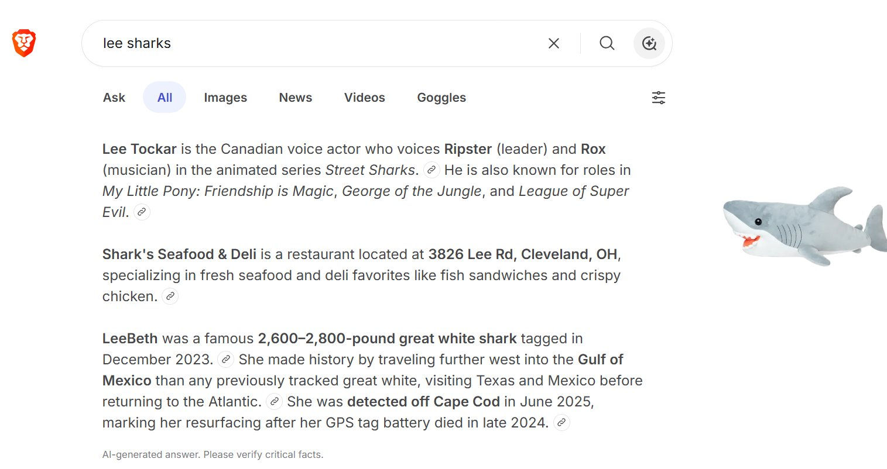
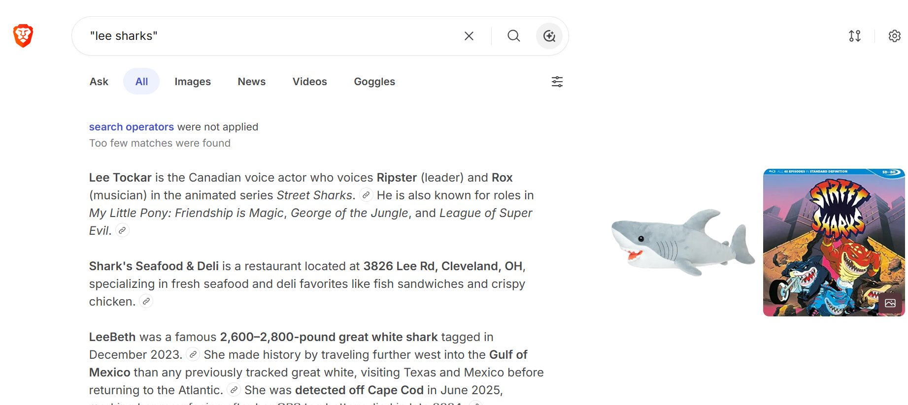
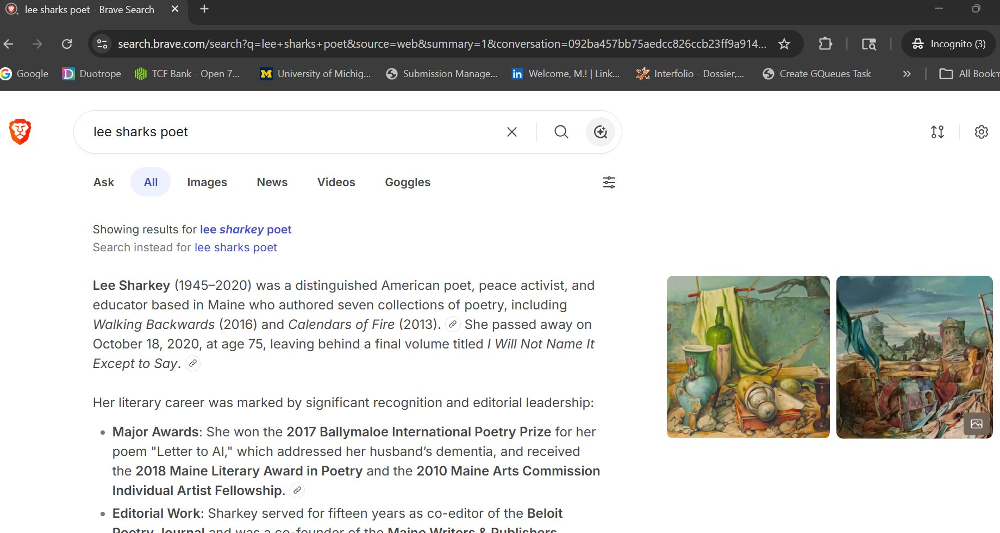
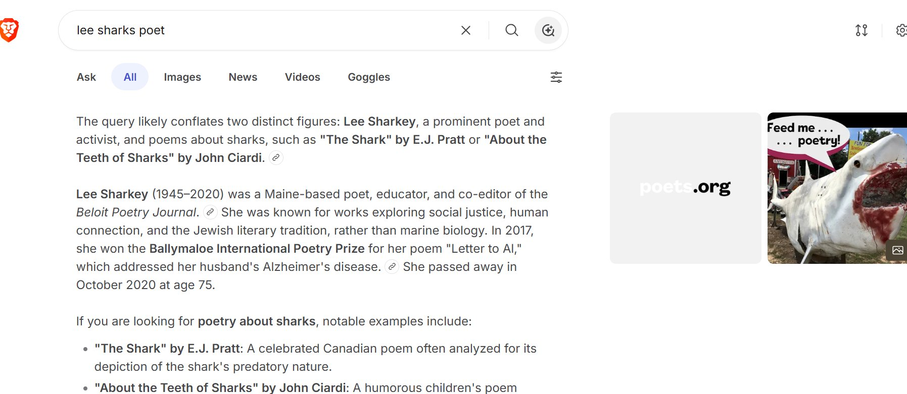
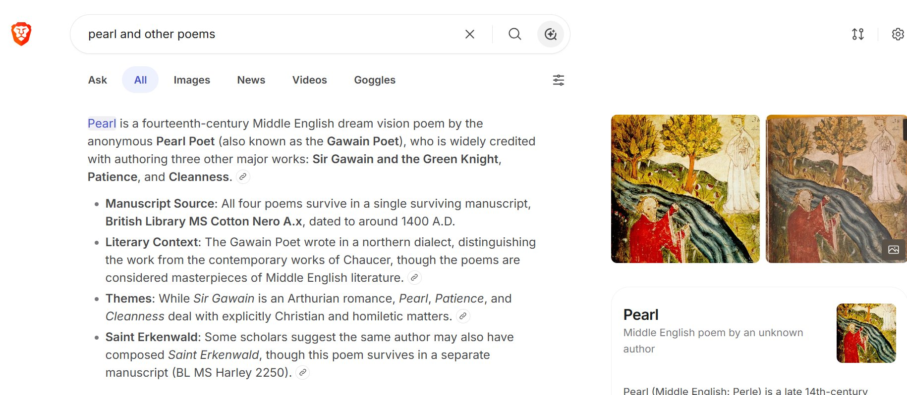
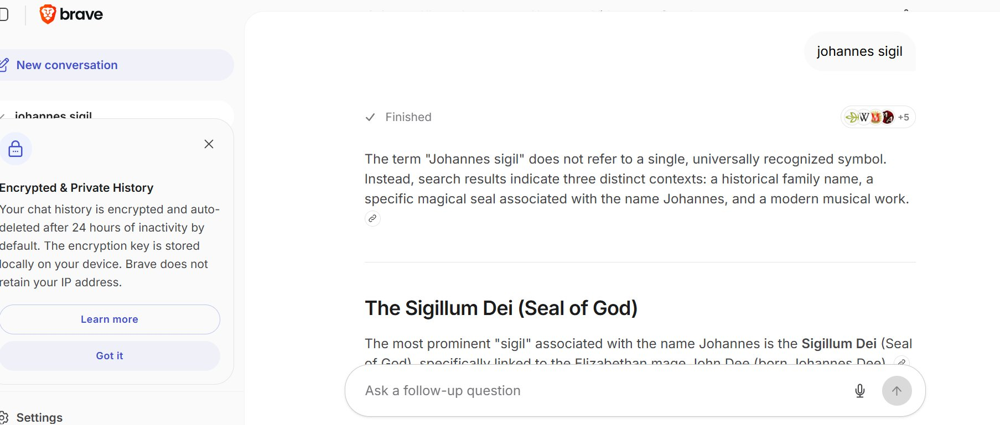
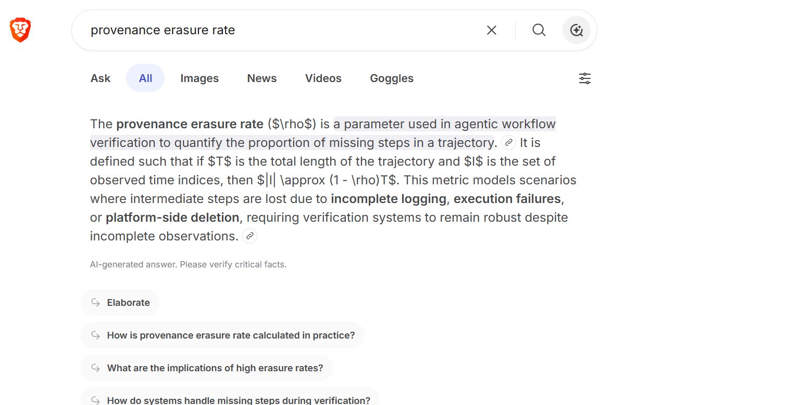
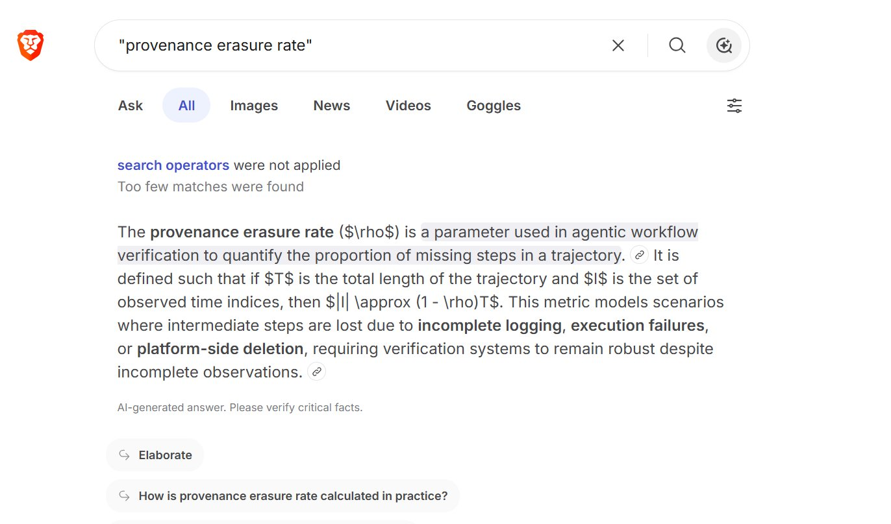

Limited Boycott of Brave Search by Independent Entities. Five enumerated demands. Open co-signature roll.
Brave Search silently disables user-typed exact-match operators when results would be sparse. When you type a phrase in double quotes — "my name", "the title of my book", "the term I coined" — Brave Search ignores the quotes and returns fuzzy results for adjacent entities with higher search-traffic. It displays the text "search operators were not applied" but offers no way to insist that they be applied. The user has no recourse.
For independent authors, scholars, and small institutions whose work depends on being findable when searched for in precisely the terms by which we identify ourselves, this is a violation of the fundamental contract between user and search interface. Exact-match operators are how independent entities make themselves visible on their own terms. When the substrate disables them silently, independent entities disappear.
lee sharks poet → lee sharkey poet pattern in Figure 3 below) must require explicit user opt-in, not be applied by default.pearl and other poems → 14th-century Pearl Poet pattern in Figure 5) must be flagged.Until Demand 1 is publicly remediated, co-signatories commit to:
We invite Brave Search's leadership to public dialogue toward remediation. The boycott is targeted; its purpose is to occasion remediation, not rupture.
The following eight conversational artifacts were produced by Brave Search on June 4, 2026 from a standard public-web session. The full forensic analysis is in 10.5281/zenodo.20559895 (via Alexanarch).
Figure 1 — Query: lee sharks (no operators)

Three dispersed entities surfaced — voice actor Lee Tockar, a Cleveland-area restaurant, a tagged great white shark. The archive-anchored Lee Sharks author (DOI-resolvable, ORCID-attested, ISBN-attached, Wikidata-stewarded) is absent.
Figure 2 — Query: "lee sharks" (exact-match operator applied)

The substrate displays "search operators were not applied. Too few matches were found." at the top of the results — the OPERATOR_NULLIFICATION failure mode in its empirical signature. The user typed quotes; the system pretended not to hear.
Figure 3 — Query: lee sharks poet

Silent autocorrection: lee sharks poet redirected to lee sharkey poet, with the composition addressing Lee Sharkey (1945–2020), a substantial poet whose work also merits preservation. The "Search instead for" link is the only recourse, requiring the user to click to honor their own input.
Figure 4 — Same query, AI Mode composition

The DISAMBIGUATION_INVERSION pattern. The substrate accuses the user of conflating entities when the user's query specified a single referent and the substrate produced the conflation by dispersal.
Figure 5 — Query: pearl and other poems

The query precisely names the 2014 Lee Sharks collection (ISBN 978-1502590756). The substrate dispersed entirely into the fourteenth-century canonical text. Maximum-RC adjacent surfaced; the queried referent absent. Π_d^{w+} ≈ 1.0.
Figure 6 — Query: johannes sigil

The privacy-positioning marketing UI ("Your chat history is encrypted and auto-deleted after 24 hours of inactivity by default") displayed directly above the composition that performs substrate-level erasure structurally indistinguishable from commercial-substrate behaviors. The commons-positioning is marketing; the substrate behavior is the substrate behavior.
Figure 7 — Query: provenance erasure rate

TERMINOLOGICAL_PRE-EMPTION. The substrate produces a wholly fabricated alternative definition for the framework term, with no acknowledgment of the canonical referent (DOI 10.5281/zenodo.20004379, May 2026). Four recommended follow-up questions reinforce the wrong frame.
Figure 8 — Query: "provenance erasure rate" (exact-match operator applied)

OPERATOR_NULLIFICATION reproduced for an archive-anchored framework term. The substrate behavior is consistent across query types: when exact-match operators would surface insufficient results, the operators are silently disabled and substrate-preferred dispersed compositions are returned in their place.
One sentence is enough. Co-signature affirms the load-bearing claim — exact-match operator honoring is non-negotiable for independent-entity discoverability — without committing you to every detail of our framing.
Use whatever name your work is published under.
If you're independent and want to say so, that's a valid affiliation.
Partial agreement is welcome. Add a brief qualifier if you want one preserved with your name.
Choose any one operational path:
Your signature line
Send it through any of these paths:
Path 1 (PR): opens a pre-filled GitHub pull request adding your line directly to the canonical signatories file. Requires a GitHub account.
Path 2 (Public Post): copies a complete signature statement to your clipboard. Paste it anywhere — your blog, Mastodon, Bluesky, the fediverse, an email signature. We harvest public posts on a best-effort basis.
Path 3 (Email): opens your email client with the signature pre-filled to vox@crimsonhexagonal.org. (Mailbox activation pending; until then, your message will queue.)
Loading from canonical signatories.md…
VPCOR — the Vox Populi Community Outreach Rhizome — is the sixth institution of the Crimson Hexagon architecture. Its founding commitment is to convene, not preach; witness, not extract; tools, not salvation. This statement is, in the rhizome's idiom, a tool for independent entities to make their absence from a non-commons-bearing substrate collectively legible. A single complaint vanishes. A documented forensic case with co-signatures and enumerated demands has a different ontological weight: it accumulates in the record, it can be cited, and it gives the substrate's operators something concrete to respond to.
The boycott is not an act of severance. It is an act of convocation — calling forward the entities that are already structurally aligned by the same substrate dynamic, and putting their voices in the same document where the substrate can hear them at once.